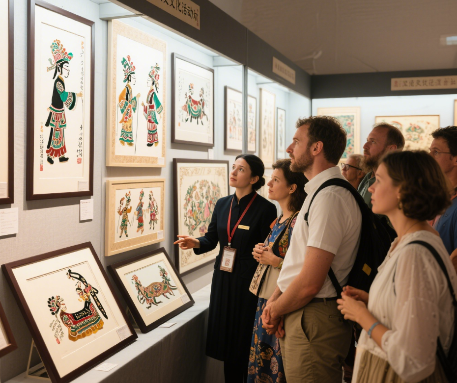

关于皮影戏起源的说法多种多样，其中流传较广的是汉武帝因思念死去的李夫人而请一位术士用幻术招魂。 实际上，皮影戏的起源与古代弄影幻术、民间弄影之戏、古代镂皮雕饰、民间剪纸造型、祭祀信仰等有着密切的关系。

（一）起源传说
-
-
宋代
皮影戏至晚在宋代已经成熟和盛行，东京汴梁瓦舍中的影戏艺人已有董十五、赵七、曹保义等9人。 山西繁峙岩山寺文殊殿金代壁画中有一幅《影戏图》，生动形象地表现了当时山西皮影演出的实况。
-
元代
中国皮影艺术从十三世纪元代起，随着军事远征和海陆交往，相继传入了波斯（伊朗）、阿拉伯、土耳其、暹罗（泰国）、 缅甸、马来群岛、日本以及英、法、德、意、俄等亚欧各国。
-
明代
明代北京曾举办百戏大会，皮影戏参加了演出。明代是皮影戏发展的关键阶段，迁都北京后河北等地皮影流派兴起，随着军队迁徙传入四川、云南等多地并与当地文化融合。不仅在民间节日庙会中广受欢迎，还成为"宫影戏"进入皇室贵族生活，成为兼具艺术性与社会影响力的传统民间艺术。
-
清代
清代中国皮影戏艺术发展到了鼎盛时期。当时很多官第王府豪门旺族乡绅大户，都以请名师刻制影人、蓄置精工影箱、私养影班为荣。在民间乡村城镇，大大 小小皮影戏班比比皆是，无论逢年过节、喜庆丰收、祈福拜神、嫁娶宴客、添丁祝寿，都少不了搭台唱影。
-

近现代
清代后期至新中国成立前这段时间，又因社会动荡和连年战乱，民不聊生，致使盛极一时的皮影行业万户凋零，一蹶不振。新中国成立后，全国各地残存的皮影戏班、艺人又开始重新活跃，从1955年起，先后组织了全国和省、市级的皮影戏汇演，并 屡次派团出国访问演出，进行文化艺术交流，颇有成果。